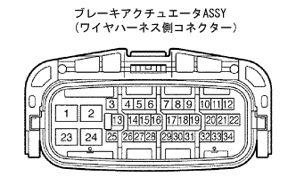

DTC C1235/35 スピードセンサFR鉄片付着異常 |
DTC C1236/36 スピードセンサFL鉄片付着異常 |
DTC C1238/38 スピードセンサRR鉄片付着異常 |
DTC C1239/39 スピードセンサRL鉄片付着異常 |
| DTC No. | DTC検出条件 | DTC出力関連項目 |
|---|---|---|
| C1235/35 C1236/36 C1238/38 C1239/39 | 車速20km/h以上でスピードセンサ信号のパルス波形異常状態が5秒以上継続 |
|

| 手順1 | スピードセンサ出力波形点検 |
|  |
SST(TaSCAN)のオシロスコープ機能を使用して、アクチュエータASSYのワイヤハーネス側コネクターの31(FR+)←→30(FR-)端子間および9(FL+)←→8(FL-)端子間、または33(RR+)←→34(RR-)端子間および11(RL+)←→12(RL-)端子間の波形を点検する。
 |
オシロスコープ波形
コネクターおよびハーネスをゆするなどして軽く振動を与え、波形に変化がないことを点検する。
| A | OK |
| B | NG(波形異常、振動を与えた際波形が変化する) |
| C | NG(波形異常、振動を与えた際波形が変化しない) |
|
| ||||
|
| ||||
| A | |
| 手順2 | ダイアグノーシスコード消去 |
ダイアグノーシスコードを消去する。(要領は参照)
| GO | |
| 手順3 | ダイアグノーシスコード再確認 |
IGスイッチをOFF→ONにして、車速20km/h以上で30秒以上走行し、ABSウォーニングランプが消灯することを確認する。
ABSウォーニングランプが常灯する場合は、ダイアグノーシスコードを確認する。(要領は参照)
| A | 正常 |
| B | 異常コード |
|
| ||||
| A | ||
| ||
| 手順4 | スピードセンサ点検 |
該当輪のスピードセンサを取りはずし、先端に異物の付着および破損がないことを点検する。
|
| ||||
| NG | ||
| ||